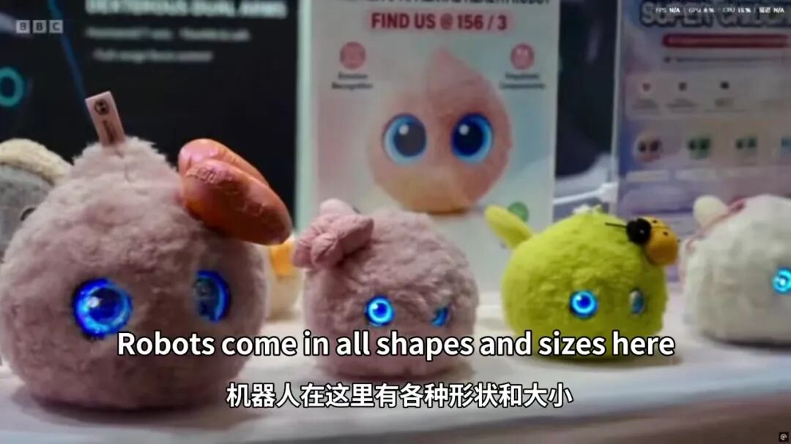
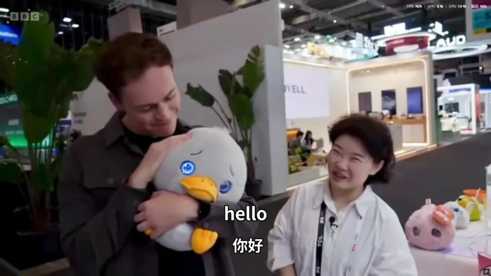
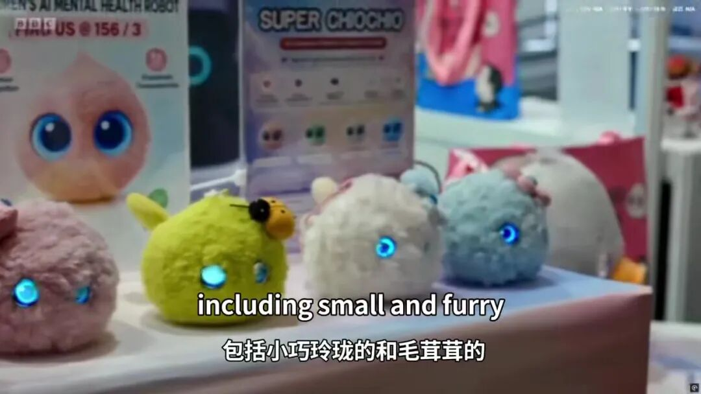
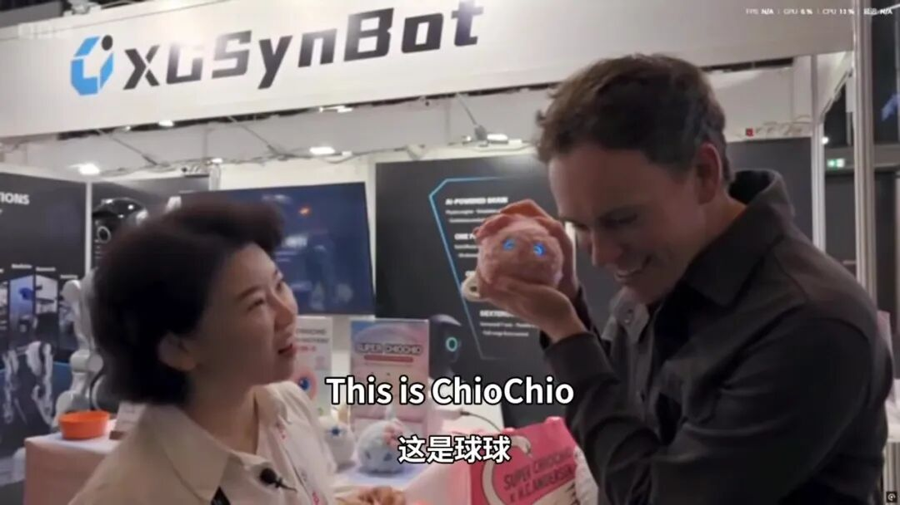
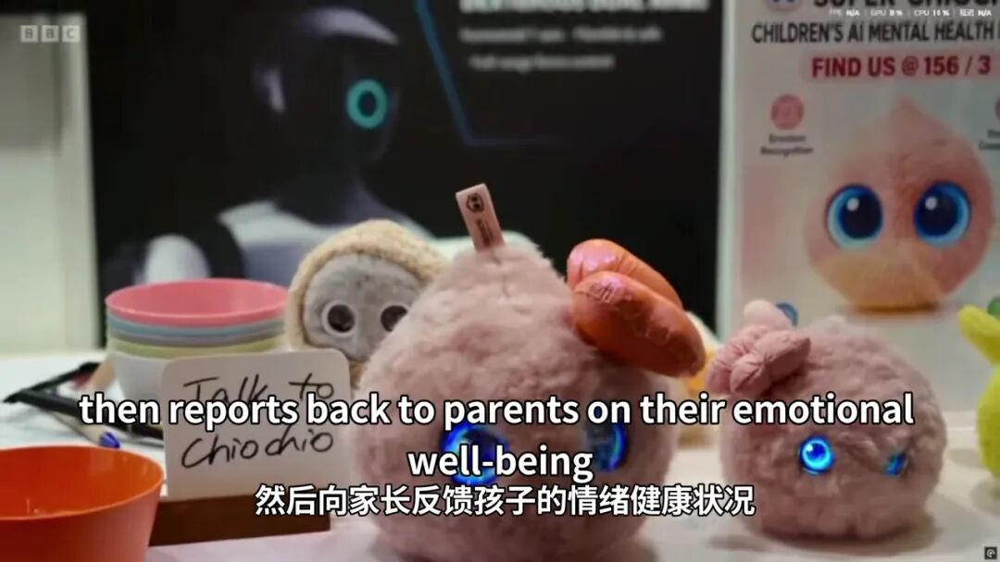

今天，要跟大家分享一件特别激动的事——
BBC 报道我们的球球了！
在机器人展会现场，BBC 的镜头在五花八门的机器人之间穿行，最后停在了我们展台前——停在了这些毛茸茸、眼睛会发光的小可爱身上。

一、BBC 是怎么报道超级球球的？
BBC 的报道从我们展台开始：记者怀里抱着的，是我们超级球球安徒生系列的丑小鸭。他刚把小鸭子搂进怀里，丑小鸭就眨着亮晶晶的蓝眼睛回应了一声——
"Hello！"（你好！）

丑小鸭卖了个萌，BBC 的解说也顺势把话题带向了整个展台：
"It's not just humanoids. Robots come in all shapes and sizes here, including small and furry."
"这里不只有类人机器人，机器人有各种形状和大小——包括小巧玲珑的、毛茸茸的。"
镜头随之扫过展台上毛茸茸的小家伙们，停在了这次报道的主角身上：

接着，BBC 的解说正式介绍了这位新朋友："This is ChioChio！"（这是球球！）

BBC 给球球的定位非常精准——一款由人工智能驱动的可爱儿童玩具（an AI powered cuddly toy for children），更是一台儿童 AI 心理健康陪伴机器人。
它最打动人的能力，被 BBC 用两句话讲得明明白白：
"It responds to a child's touch or tone, then reports back to parents on their emotional well-being."
"它会对孩子的触摸或语气作出回应，然后向家长反馈孩子的情绪健康状况。"
孩子摸摸它、跟它说说话，它能感知情绪、给出温暖的回应；同时，它还会把孩子的情绪状态反馈给家长——让每一次陪伴都被看见，让每一种情绪都被理解。

二、这次报道的原文，我们完整整理出来了
把 BBC 这段报道的完整文字内容放在这里，中英对照：
🎬 「Hello」（你好）——安徒生系列丑小鸭的问候
It's not just humanoids.
这里不只有类人机器人。
Robots come in all shapes and sizes here, including small and furry.
机器人在这里有各种形状和大小，包括小巧玲珑的和毛茸茸的。
"I'm here to help children learn."
"我在这里是为了帮助孩子学习。"
This is ChioChio.
这是球球。
It's an AI powered cuddly toy for children.
它是一款由人工智能驱动的可爱的儿童玩具。
It responds to a child's touch or tone, then reports back to parents on their emotional well-being.
它会对孩子的触摸或语气作出回应，然后向家长反馈孩子的情绪健康状况。
三、完整报道视频
📢 23 秒完整报道视频已随本文发布，点开就能看到 BBC 记者被球球萌到的全过程👇
BBC 报道球球 · 完整视频（0:23）
从国内展会走向国际镜头，球球这一次被 BBC 看见，是认可，更是新的起点。
谢谢每一位喜欢球球的朋友。未来，球球会继续用毛茸茸的温暖，陪孩子长大，替家长看见孩子的每一种情绪。❤️
四、介绍一下 BBC
BBC，全称 British Broadcasting Corporation（英国广播公司），成立于 1922 年，是全球历史最悠久、影响力最大的新闻媒体之一，被公认为世界上最具公信力的国际新闻机构之一。
它的科技栏目长期追踪全球前沿科技动态，覆盖人工智能、机器人与智能硬件领域。能够登上 BBC 镜头报道的产品，往往是行业里备受关注的创新作品。
而这一次，BBC 把镜头对准了我们的球球！
— END —
配图均截取自本次 BBC 报道视频